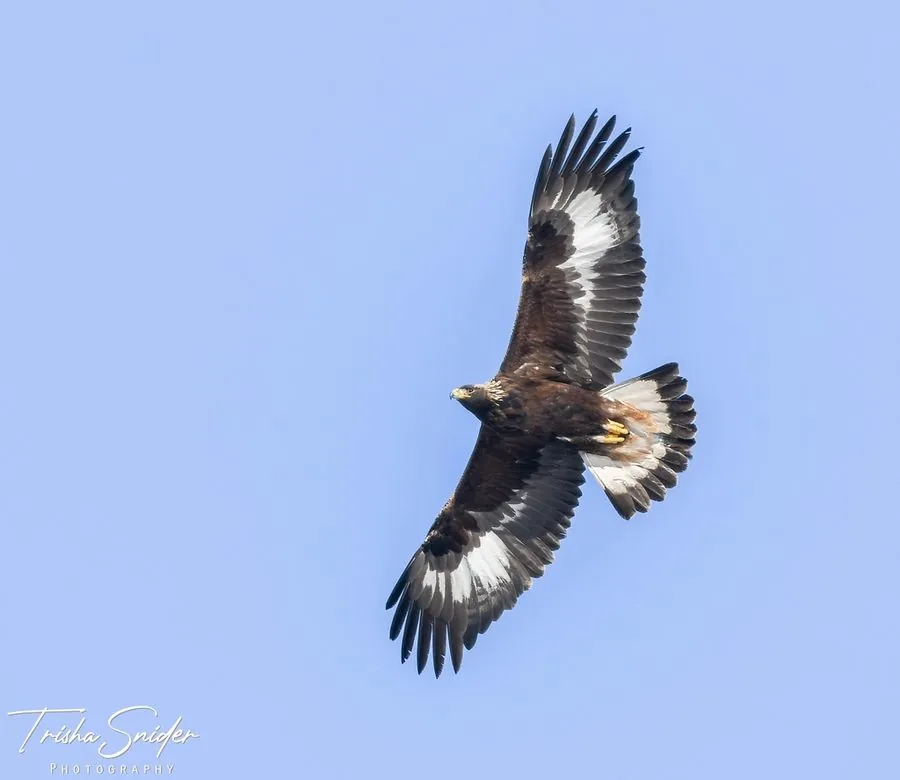

鸟类 · 动物界
金雕 Aquila chrysaetos

北半球山地最具代表性的猛禽之一，翼展可超 2 米，后颈金褐色羽毛耀眼，能猎杀野兔与幼年岩羊。
- 分类
- 门脊索动物门纲鸟纲目鹰形目科鹰科属雕属
- 栖息环境
- 高山、高原、峡谷和开阔山地，巢多筑于悬崖峭壁或高大乔木上
- 地理分布
- 欧亚大陆、北美和北非的山地，中国东北、华北、西北及青藏高原均有分布
- 保护级别
- IUCN 无危（LC）；中国国家一级保护动物
物种志
金雕体长 75–100 cm，翼展 180–234 cm，雌鸟体重可达 6 kg 以上，比雄鸟明显更大。通体深褐色，后颈和头顶的羽毛呈金黄褐色，呈矛状披散，在阳光下十分醒目。幼鸟的尾基和翼下有明显白斑，随年龄增长逐渐消失。它飞行时双翼宽阔、翼端指状分开，常在山区上空盘旋。
金雕广泛分布于欧亚大陆、北美和北非的山地，中国东北、华北、西北及青藏高原均有记录。它们多在人迹罕至的悬崖上筑巢，巢由树枝堆成，直径可达 2 米，一对金雕常连续多年沿用同一巢址。每年产卵 1–3 枚，孵化 43–45 天，育雏期长达 3 个月。金雕主要捕食野兔、旱獭、雉类和松鼠，也会取食腐肉；俯冲时速度可超过 200 km/h。由于繁殖率低且受人类活动干扰，中国将其列为国家一级保护动物。
形态与习性
- 食性野兔、旱獭、雉类、松鼠，也取食腐肉
- 体长75–100 cm
- 翼展180–234 cm
- 体重雌鸟 4–6.7 kg，雄鸟 3–4.5 kg
- 繁殖每窝产卵 1–3 枚，孵化 43–45 天
- 寿命野外约 20 年，圈养可超过 40 年
- 巢址悬崖岩台或高大乔木，巢径可达 2 米
趣味知识
- 雌性金雕比雄性大两成左右，这种“雌大雄小”在猛禽中很常见。
- 金雕俯冲时速度可超过 200 km/h，常贴山脊低飞突袭猎物。
- 一对金雕会多年共用一个巢，每年只修补加固，不轻易另起新巢。
- 在蒙古和中国北方，哈萨克族驯鹰人至今保留用金雕捕猎狐狸的传统。